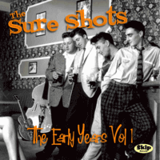

the Sure Shots - The Early Years Vol 1 (Album, 2010)
01 - Jump Baby Jump (2:36)
02 - SOS (2:11)
03 - Baby Got No Time For Me (2:35)
04 - You Don't Care (3:48)
05 - Broken Heart (2:19)
06 - Somebody's Been Rockin' My Boat (1:55)
07 - Fire Engine Baby (2:07)
08 - Don't Make Me Wait Too Long (2:07)
09 - Worried About You Baby (3:06)
10 - You're My Baby (2:06)
11 - I'm On Fire (3:18)
12 - Little Pig (1:57)
© Skip Records :: [SKCD-06]
Notes
United Kingdom.
Tracks 01, 02, 03, 04, 05, 06 were recorded in 1984
Tracks 07, 08 were recorded in 1986
Tracks 09, 10 were recorded Live in 1985
Tracks 11, 12 were recorded Live in 1986
reference information: Discogs®
Review
152/366 (Project 366)
Early days of then legendary Rockabilly band. Authentic mood, contemporary style.